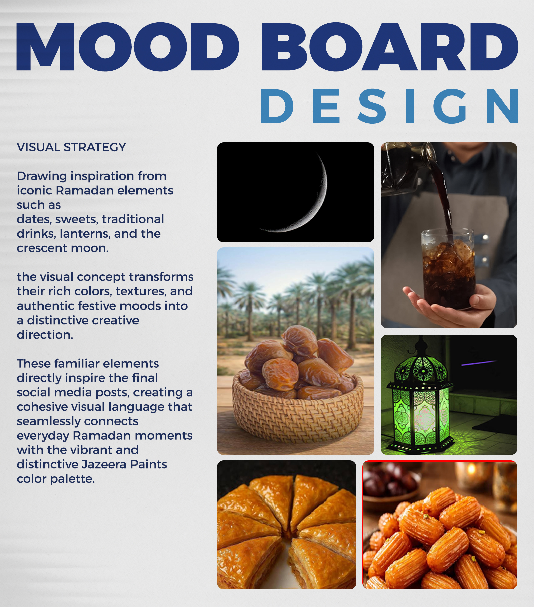

Ramadan 2022 Campaign
Matching the colors of familiar Ramadan drinks and foods to the Jazeera Paints palette.

The Challenge
The management team wanted a fresh, unconventional approach to Ramadan advertising, moving beyond traditional paint promotions.
The Creative Idea
Every Egyptian home shares the same Ramadan table. I built the concept around its familiar drinks and traditional foods, matching each one’s color to a shade from the Jazeera Paints palette. Everyday Ramadan moments became a clear, engaging visual campaign.
My Role
I led the creative direction and design execution, delivering a series of 7 designs where the idea carries the message and the visuals stay clean.
The Result
The campaign went beyond its original Egyptian market and was rolled out across Jazeera Paints platforms in Saudi Arabia, the UAE and Iraq, under my supervision. A culturally rooted idea proved it could travel across markets without losing its identity.